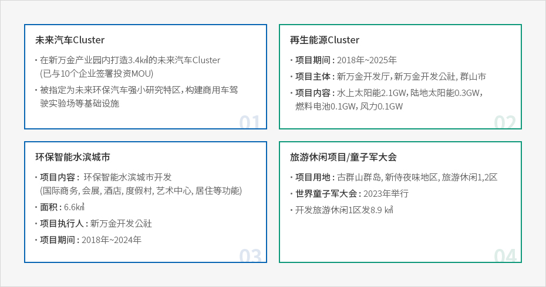

新万金
- Home
- 투자의 기회
- 외국인투자기업 중점유치 지역
- 새만금
산업입지에는 경제자유구역, 외국인투자지역 및 자유무역지역 등의 외국투자가를 지원하기 위한 지역이 있으며, 입지는 임대 또는 분양의 형태로 지원된다. 이러한 지역은 일정 요건 충족 시 입지지원 뿐만 아니라 조세감면이 적용되며 다른 법령에서 제한되는 사항에 대한 예외가 적용되는 경우도 있다.
新万金项目是国家重点开发项目，
通过筑造连接全罗北道群山和扶安的世界最长防波堤并开发由此形成的
291㎢土地和118㎢的湖沼，将其打造为集经济，产业和旅游为一体的东北亚经济中心。
新万金项目概要
承载大韩民国未来的世界级规模的围海造田项目
-
位置全罗北道群山市, 金堤市, 扶安郡一带
-
项目规模面积: 409㎢(土地 291㎢, 湖水 118㎢) 世界最长防潮堤: 33.9km
-
项目费用22.2兆韩元(国家10.9, 地方政府0.9, 民资 10.3) 土地建设10.9, 基础设施6.6, 水质改善2.9, 其他1.8 截至’2018年已投资6.5兆韩元
-
预计人口完成开发时吸引人口共75.9万人, 新万金区域内预计容纳29万人


愿景
开启新文明的城市, 新万金(ARIUL)

为시共同繁荣并解决共同难题开展国家间·产业间合作
- 打造跨国经济合作特区 形成合作国家间的经济共同体
- 国际化居住·交流据点城市 具有世界级居住环境的精品城市包容多元文化的文化融合城市
- 基于需求定制的计划城市 弹性反应投资者和企业需求的城市
- 充满活力的绿色水滨城市 人与自然和谐发展的环保城市可持续的高端农业绿色城市
- 个性化定制&奖励专业化城市 量身定制优惠政策及无管制的示范城市
新万金的竞争力
为打造东北亚经济中心，由中央行政机关专管的唯一国家级项目

-
国家层面牵头的投资及支援
- 通过推进公共主导的项目，加快项目的建设速度，得到政府的大力支持。公共主导推进的项目，政府的大力支持下有su'duan加快推进项目建设速度
- 设立新万金开发公社，专门管理填埋工程及基础设施建设
-
韩国唯一的韩中产业园
- 定期举行韩中产业园副部长级·局长级会议和合作交流会
- 进口原料后加工再出口,免关税
-
相比韩国其他经济特区更为灵活的规制
- 进口进口货物无存储期限限制及各种税收优惠
- 为国内外投资企业提供长期租赁用地(50年+50年)
- 简化签证（C-3）申请和签发有关手续
-
电动车相关的群山型工作岗位
- 完成电动车Cluster后至2022年预计电动车总产量17.7万台,总投资额4,122亿4韩元,创造1,902个就业岗位
- 参与企业: MYOUNGSHIN,新万金, EDISON MOTORS,DAECHANG MOTORS,MPS KOREA等4家中坚企业及5家配件企业
-
群山尖端研发特区
- 群山尖端研发特被指定为国立群山大学和汽车融合技术院等6所研究支援机构参与的研发特区将为企业提供技术支援区
-
新万金新交通特区
- 将在新万金地区内打造无人驾驶汽车,无人机, 地效翼船等陆海空交通相关的4次产业革命核心技术实验及商用化特区
新万金土地利用计划及主要项目现状


-
未来汽车Cluster
- 在新万金产业园内打造3.4㎢的未来汽车Cluster(已与10个企业签署投资MOU)
- 被指定为未来环保汽车强小研究特区，构建商用车驾驶实验场等基础设施
-
再生能源Cluster
- 项目期间 : 2018年~2025年
- 项目主体 : 新万金开发厅, 新万金开发公社, 群山市
- 项目内容 : 水上太阳能2.1GW, 陆地太阳能0.3GW, 燃料电池0.1GW, 风力0.1GW
-
环保智能水滨城市
- 项目内容 : 环保智能水滨城市开发(国际商务, 会展, 酒店, 度假村, 艺术中心, 居住等功能)
- 面积 : 6.6 ㎢ / 项目执行人 : 新万金开发公社 / 项目期间 : 2018年~2024年
-
旅游休闲项目/童子军大会
- 项目用地 : 古群山群岛, 新侍夜味地区, 旅游休闲1,2区
- 世界童子军大会: 2023年举行
- 开发旅游休闲1区发8.9 ㎢